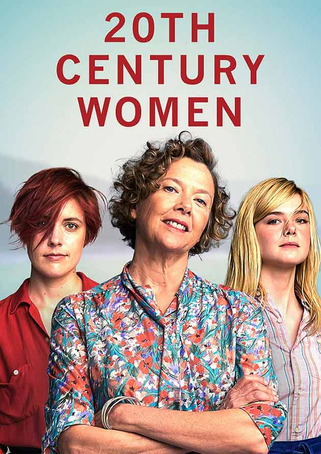

 In 1979 Santa Barbara, Calif., Dorothea Fields is a determined single mother in her mid-50s who is raising her adolescent son, Jamie, at a moment brimming with cultural change and rebellion. Dorothea enlists the help of two younger women -- Abbie, a free-spirited punk artist living as a boarder in the Fields' home and Julie, a savvy and provocative teenage neighbor -- to help with Jamie's upbringing.
Initial release: 28 December 2016 (USA)
Director: Mike Mills
Production companies: Annapurna Pictures; Archer Gray; Modern People
Produced by: Anne Carey; Megan Ellison; Youree Henley
Nominations: Independent Spirit Award for Best Female Lead